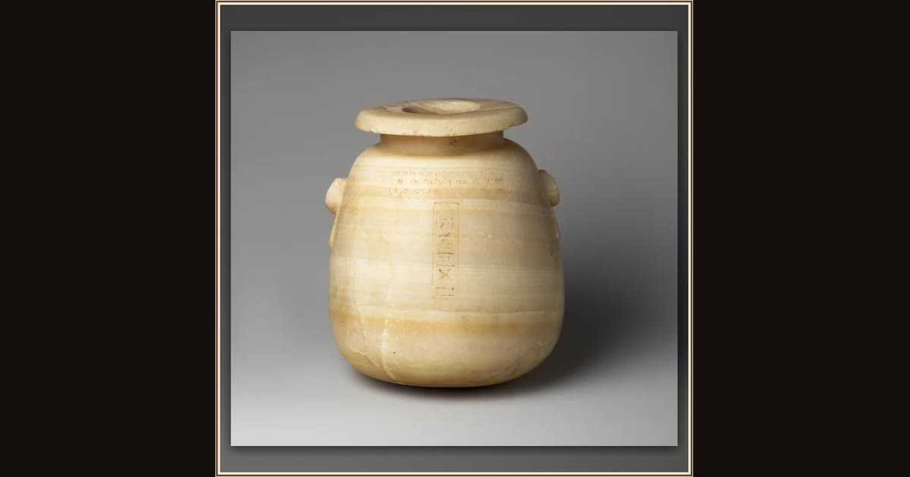

Jar with the name of Xerxes the Great in four languages
Egyptian, Late Period · 486–466 BCE · met
An Egyptian alabaster jar bears Xerxes' name in four languages; Herodotus says that in the second year after Darius' death, Xerxes subdued Egypt and entrusted it to Achaemenes (7.7.1) Explore its place in Herodotus's Histories, Book VII, chapter 20.